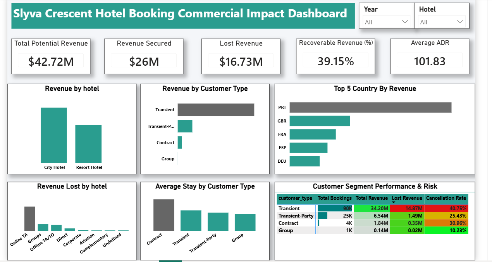

Putting a dollar figure on cancellations — and showing exactly which customer segments and channels were bleeding the most recoverable revenue.
Hotel booking data is full of noise — bookings, cancellations, no-shows, rebookings — but leadership only had a gut feeling that cancellations were a problem. Nobody had quantified how much revenue was actually being lost, which customer segments were the biggest risk, or which markets were worth protecting.
I built a commercial impact dashboard that reframes raw booking data around one question: how much revenue is at risk, and where. Every visual ties back to a dollar figure a revenue manager can act on.
The commercial impact dashboard — revenue, cancellation risk, and segment performance in one filterable view.

The segment risk table made the priority obvious: Transient bookings carried both the highest volume and the highest cancellation rate at 40.75%, making them the single biggest source of recoverable revenue — a far more useful finding than "cancellations are up." Online travel agency bookings also stood out as the channel with the most revenue lost, pointing directly at where a deposit or cancellation-policy change would have the most impact.
Want the full breakdown — queries, data model, or wireframes?
View full repo on GitHub